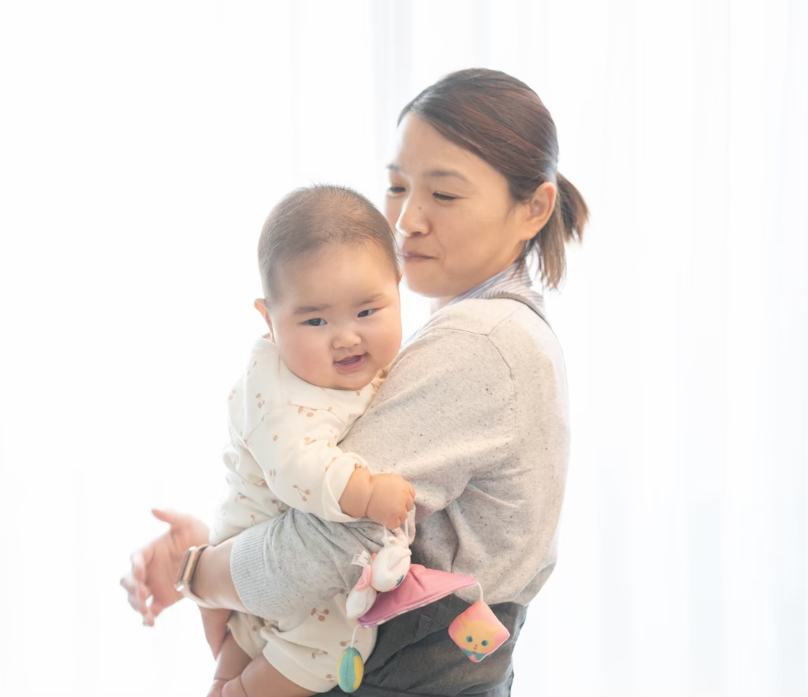
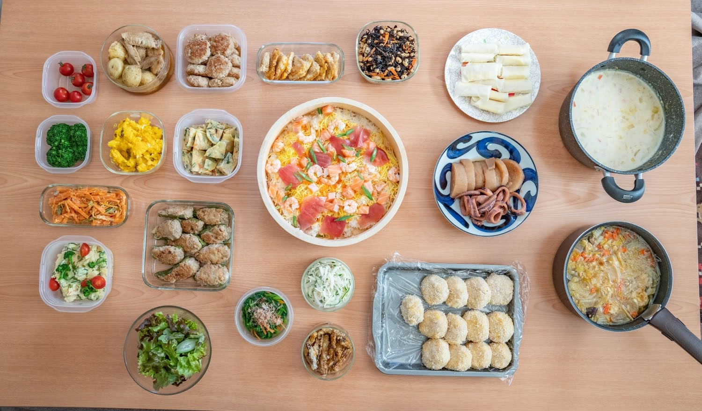
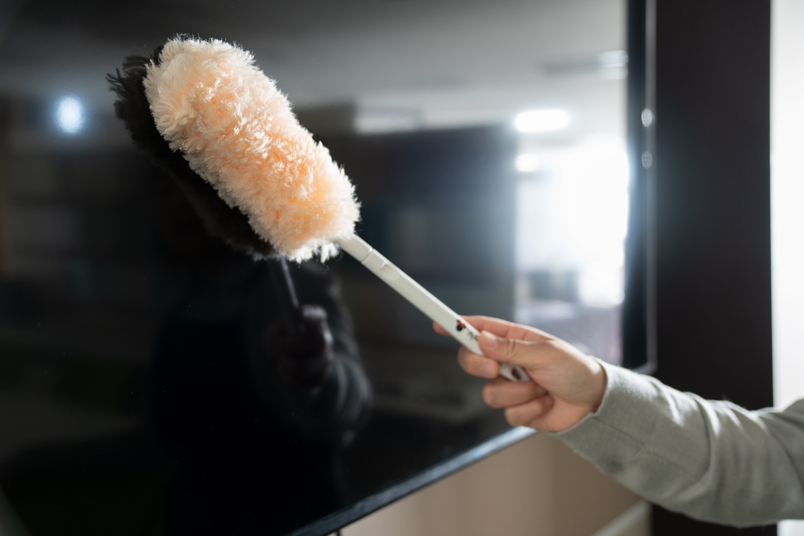

産前産後ケア
Baby.pro
産前産後の不安

こんなお悩みありませんか？
- ちゃんと子育て出来るか不安？
- 色々な情報がありすぎてどれが本当なの？
- 産後手伝いに両親が来れないけどやっていけるのか？
- ゆっくり寝たい‼
- 赤ちゃんてこんなに泣くの？
- ゆっくりご飯を食べたい‼
- 誰かと話したい‼
- 上の子の赤ちゃん返りが大変！
- 上の子のイヤイヤ期が始まって大変
- パパの仕事が忙しくワンオペ育児！
Baby.proの役割
Role
核家族世帯が増え人と人の関わり助け合いが減り情報の場がネット社会になり色々な情報が溢れる時代にどれが本当なのか？
不安になると思います！
産後想像より大変でした！とおしゃる方もいれば、育児書道りです！とおしゃる方もいらっしゃいます。
子育ては一人一人違います。
子育てに悩まず、迷った時は一緒に解決していけたら理想だなと思います。
Baby.proの役割はママの心に寄り添い無理に話さなくてもその空間に癒しを与えていけたらと思います。
Baby.proのサービス内容
- 美容室、お買い物に行きたい場合お子さんとお留守番致しますのでゆっくりとしてきて下さい。
お子さんから目を離さずお守り致します。 - ママの要望に出来る限りお応え致します。
- 家事はお任せ下さい。（簡単な水回り清掃、洗濯など）
- 何かあった場合の賠償責任保険に加入しております。
- 産後ケア終了でも引き続き家事代行に移行出来る。（次のステップは頑張るママをサポート）
ここが違う！
Baby.proサービスの特徴
-

- 作り置きサービス
- 数日分の作り置き（4～6品程）を2時間30分～承ります。お味噌汁1杯でもO.K
-

- 家事代行だからこそ念入りにお掃除致します。
- 土台は家事代行サービスなのでお掃除に関してはご安心ください。
-
- 子育て経験から
- 私自身が子育てに苦労しました（まだまだ苦労途中ですが）その経験と今まで多くのママと関わってきたので経験からお話しをしたいと思います。
新規ご契約キャンペーン
お試し産前産後ケア
- 2時間
- 5,000円（税込、交通費込み）
- 通常価格 6，000円
料金
Price
- 対応範囲
-
家事全般、お子さんの預かり、上のお子さんの補助など
- 時間
-
1時間3,300円（税込）
最低1．5時間～承ります
- 料金
-
1週間に1回
1時間2,750円（税込）
掃除・洗濯含む
2週間に1回
1時間2,860円（税込）
掃除・洗濯含む
4週間に1回
1時間2,970円（税込）
掃除・洗濯含む
よくあるご質問
FAQ
- Q.
- 赤ちゃんが泣き止まない
- A.
- 赤ちゃんにも個人差はあります。3ヶ月頃からまとまって寝てくれるようになると昼、夜の区別がつき子育ても楽になります。1人1人個人差があって当然なので焦らずに行きましょう！
- Q.
- ワンオペ育児どうしたらいい？
- A.
- 無理に家事などやらなくて良い！産後は自分を最大限に甘やかす事です。
周りに頼る事、行政の支援なども利用してみて下さい。
産後は自分が思っているよりダメージが大きいです。無理すると産後の回復もおくれます。
- Q.
- 離乳食を食べなくなったどうしよう？
- A.
- 順調に進んでいた離乳食が急に食べなくなる事は良くあります。
そんな、時は味を変える、少し硬さを変えてみるなど工夫する事で食べてくれる事良くあります。
ご利用上の注意
- 定期契約のお客様は月末にご請求書をお送り致します。
お振込みは5日以内でよろしくお願い致します。 - 万が一ご自宅の破損などをした場合はあいおいニッセイ同和損害賠償保険に加入しております。
- 軌道にのるまで一人で回りますのでお客様のご要望にお応え出来ない場合が御座います。
- 我が家にも子供達がおりますので急な体調不良等でお伺い出来ない事がありますのでご理解下さい。（日程変更なども承りますのでご相談下さい）
- キャンセル料について今の所は頂かないようにしておりますが、何度もキャンセルを繰り返すお客様に関してはご利用をご遠慮頂きます。
- 定期利用のお客様は口座番引き落としかオンライン決済か現金をお選び頂けます。
- ハウスクリーニングのような機材を持ち込んでのお掃除は出来ません。
- 小さなお子様をお持ちのお客様にお願いです。作業中はお子様から目を離さないようお願い致します。万が一事故等起きても責任は負いかねません。